（柏林科学院月度报告，1859年11月）
Ⅶ
我相信我可以这样地为科学院给予我作为她的通讯院士中的一员的荣誉表示衷心的感谢，即最迅速地使用由此给予我的特许来做关于素数出现频率的报告，这是由于其重要性而被高斯和狄利克雷长期研究的一个课题，看来也许并非完全不值得作这样的报告．
我用来作为这个研究的出发点的是欧拉的考察结果：乘积
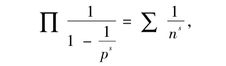
如果我们（在其中）对于p代以每个素数，对于n代以每个（正）整数．只要这两个表达式收敛，这个复变量s的函数就由它们表示，我称它为ζ（s）．这两个表达式仅当s的实部大于1时收敛；同时我们容易找到一个始终有效的函数表达式．应用方程
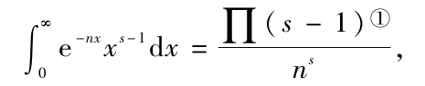
我们首先得到
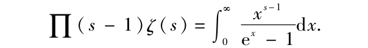
如果我们现在考虑积分
其中积分线路由+∞到-∞按正向绕过一个含有0但不含被积函数其他间断点的区域，那么容易将它写成
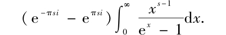
此处在取定的多值函数（-x）s-1=e（s-1）log（-x）中，-x的对教是对于负的x为实值的那一支．因此我们有
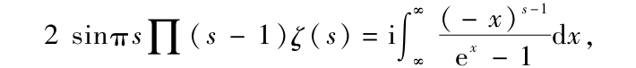
这就是我们前面要找的表达式．
现在这个方程给出了函数ζ（s）对于每个任意复数s的值，并表明它是单值的，而且对除s=1外的所有有限的s取有限值；它还表明当s是负偶数时函数值为0．
如果s的实部是负的，那么代替正方向，积分路线也可取作按负方向绕过含有所有其他复数的区域，这是因为此时当自变量取模为无穷大的值时被积函数是无穷小，但在这个区域内被积函数仅当x为±2πi的倍数时才不连续，因而这个积分等于按负向围绕这些点所取积分之和．围绕点n2πi所取积分=（-n2π）s-1（-2πi），于是我们得到
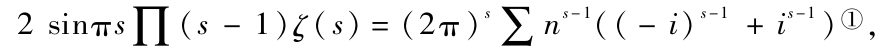
从而应用函数∏的熟知性质，也可将ζ（s）和ζ（1-s）间的关系表述为：当s变换为1-s时
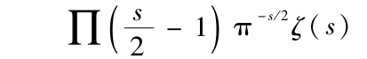
保持不变．
函数的这个性质使我们可以在级数∑1/ns的一般项中用积分∏（s/2-1）代替∏（s-1），由此得到函数ζ（s）的一个非常方便的表达式．事实上，我们有
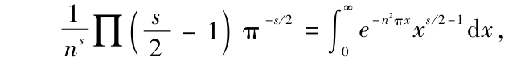
因此，若令
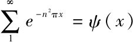
，我们得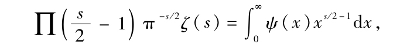
或者，因为
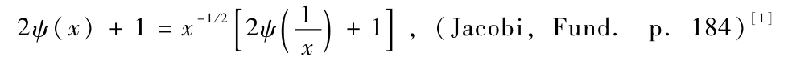
所以我们有
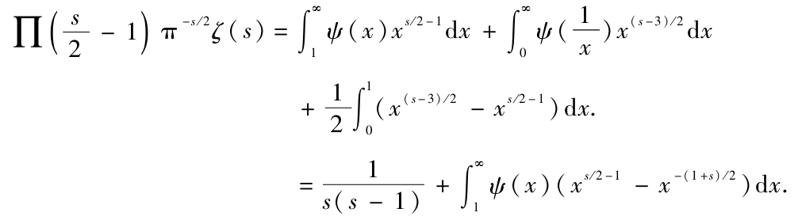
我现在令
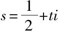
及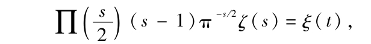
则有
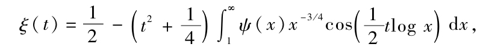
或者
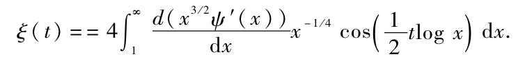
这个函数对于t的所有有限值都是有限的，并且可以展开为t2的快速收敛的幂级数．因为对于实部大于1的s值，logζ（s）=-∑log（1-p-s）仍是有限的，并且对于ξ（t）的其他因子的对数也是如此，所以仅当t的虚部落在i/2和-i/2之间时ξ（t）才会为0．ξ（t）=0的实部落在0和T之间的根的个数大约
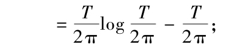
这是因为按正向围绕所有的虚部在i/2和-i/2之间而实部落在0和T之间的点t所取的积分∫dlogξ（t）等于（Tlog（T/2π）-T）i（但相差一个阶为1/T的部分）；而这个积分等于ξ（t）=0的落在上述区域中的根的个数乘以2πi.现在我们的确发现在这个界限内有很多实根，并且完全可能［方程ξ（t）=0的］所有的根都是实的．确实值得给出它的严格证明；但是做了一些不成功的尝试后，我暂时把这个证明的研究放在一边，因为看来它对于我的研究的直接目标并非必需．
如果我们用α表示方程ξ（α）=0的根，那么logξ（t）可以表示为
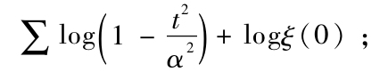
这是因为，由于ξ（t）=0的根对于变量t的频率[2]仅仅如同log（t/（2π））那样随t增加，因而上面的表达式收敛，并且当t为无穷时它仅如tlogt那样地变为无穷；于是它与logξ（t）相差一个t2的函数，这个函数对于有限的t保持有限且连续，而且被t2除后当t无穷时成为无穷小．因此，这个差是一个常数，其值可由令t=0来确定．
应用上面这些结果我们现在可以来确定小于x的素数的个数．
如果x不是素数，那么用F（x）表示这个数；如果x是素数，那么令它比这个数大1/2，于是对于F（x）在那里有跳跃的点x，
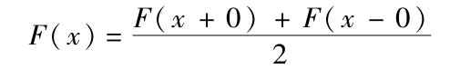
现在如果在
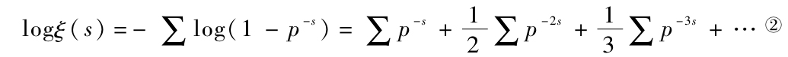
中用
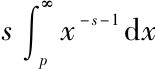
代替p-s，用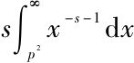
代替p-2s，等等，我们可得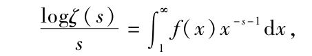
其中f（x）表示
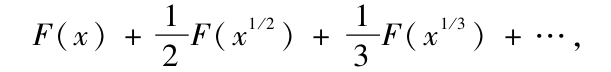
这个方程对于s的每个复值a+bi（a>1）成立．但如果对s值的这个范围方程
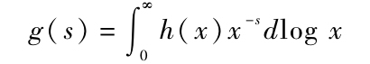
成立，那么借助傅里叶（Fourier）定理我们可以用函数g表示函数h．如果h（x）是实的，并且
g（a+bi）=g1（b）+ig2（b），
那么这个方程分解为下列两个方程：
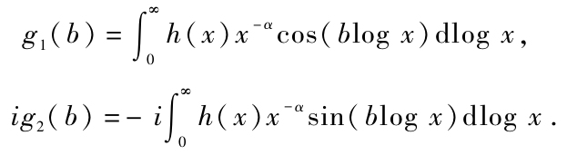
如果用（cos（blogy）+i sin（blog y））db乘这两个方程然后从-∞到+∞积分，那么由傅里叶定理我们在两个方程的右边得到πh（y）y-a，因此若将两个方程相加并乘以iya，就可得到
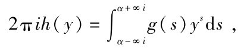
此处取积分路线使得s的实部保持为常数（2）．
对于使得函数h（y）有跳跃的y的值，这个积分表示函数h在间断点的任何一侧的平均值．依这里函数f（x）的定义，它有相同性质，因而我们完全一般地得到
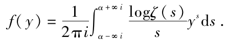
我们现在可以用以前得到的表达式
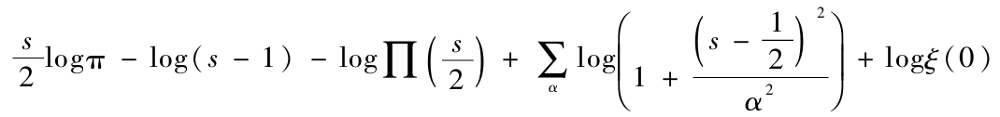
来代替logζ，但这样一来这个表达式中趋于无穷的那些项的积分就不收敛，这表明为什么应用分部积分将这个方程变换成
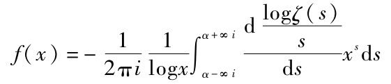
是有用的．因为
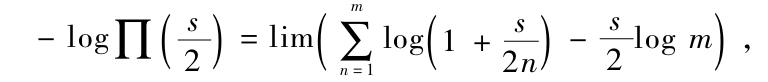
所以当m=∞时我们有
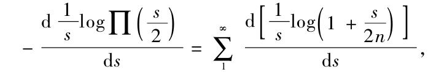
于是f（x）的表达式中的所有项，除
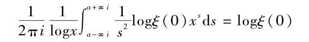
外，都取形式
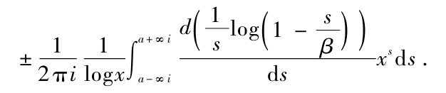
但现在有
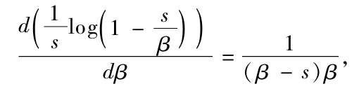
并且若s的实部大于β的实部，则依β的实部是负或正有
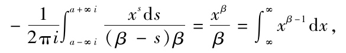
或
于是我们得到
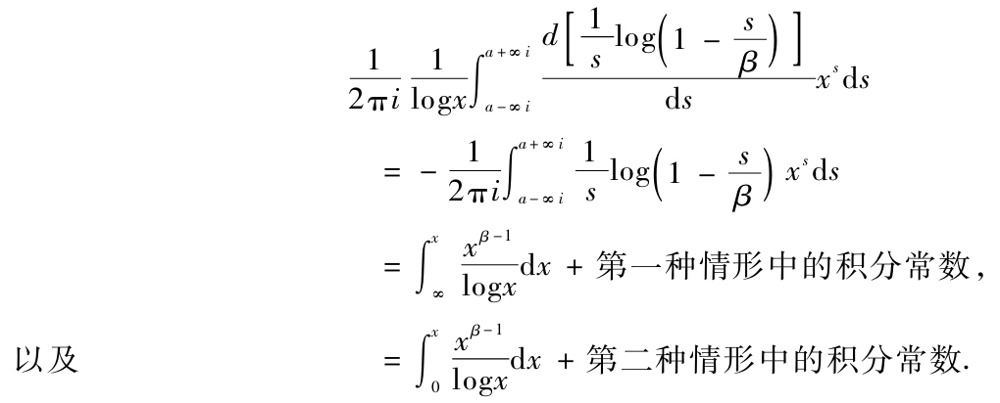
在第一种情形如果我们令β的实部趋于负无穷就可确定积分常数；在第二种情形积分取0和x间相差2πi的值，这取决于积分是由具有正的还是具有负的辐角的复数来计算，如果对于前者，值β中的i的系数趋于正无穷，但对于后者这个系数趋于负无穷，那么积分常数成为无穷小．由此我们得到定义左边的log（l-s/β）的方法，使得积分常数为0．
将这些值代入f（x）的表达式，我们得到
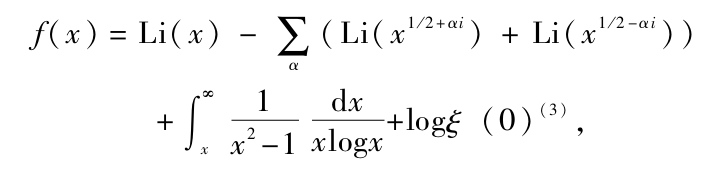
其中
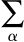
对方程ξ（α）=0的按大小顺序排列的所有正根（或具有正实部的根）求和．借助对函数ξ的更细致的讨论，容易证明，在这种排列顺序下，级数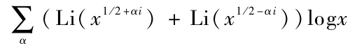
的值与
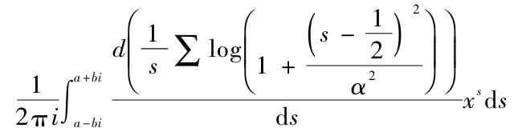
当b无限增长时的极限相一致；但若排列顺序改变，则它可以有任意的实值．
把关系式
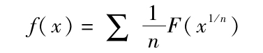
反转，我们可以由f（x）求出F（x），作为结果得到方程
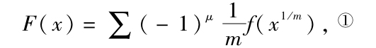
其中级数对不被任何平方数（1除外）整除的数m求和，μ表示m的素因子个数．
如果我们限定
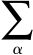
是有限多项求和，那么f（x）的表达式的导数，即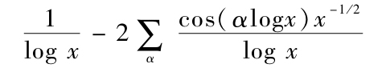
（但要相差一个当x增加时下降得很快的部分）为素数对于值x的频率+素数平方对于值x的频率的一半+素数立方对于值x的频率的1/3+…给出一个近似表达式．
于是已知的近似公式F（x）=Li（x）仅准确到一个增长阶为x1/2的项，并且有时给出太大的值；这是因为除了随x不增长到无穷的量外，F（x）的表达式中非周期部分是
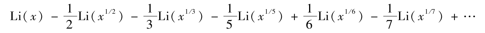
实际上，当高斯和哥得施密特（Goldschmidt）将Li（x）和不超过x（直到x=300万）的素数个数相比较时，早从x=10万起素数个数就保持小于Li（x）．并且实际上这个差虽有许多摆动但随x缓慢地增加，但当做过这些计算后，素数怎样依赖于周朝部分偶尔以大的或很小的频率出现也引起了注意（但是没有规则的形式被记录下来）．应该进行任何新的计算，追踪素数频率表达式中的单个周期项产生的影响将是有意义的．在这个工作中应用函数f（x）比应用F（x）更可靠，在最初100个数据中就已非常清楚地显示出它在大部分情形与Li（x）+logξ（0）相符．
注
在黎曼遗稿中的一份信件里我们发现下列研究结果，后来它们曾被报告过：
“我还没有完全完成这个证明，并且在这方面我还要……增加考察两个定理，我在这里只是将它们引述一下，
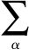
（Li（x1/2+ai）+Li（x1／2-αi））（其中α按递增顺序排列）收敛于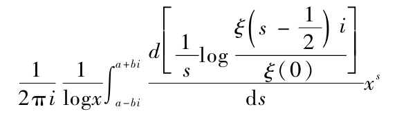
当b趋向无穷时的极限，这可以从函数ξ的新的结果推出，但我还没有将这个新的结果简化得足以使我能报告它．”
尽管后来有许多研究［夏伯纳（Scheibner），皮兹（Pilz），司梯尔杰斯（Stieltjes）］但这个工作的不明确之处仍然没有被完全解释清楚．
（1）函数ζ（s）的这个性质可以应用这个函数的第二个表达式
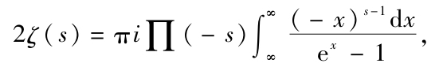
并且依据1/（ex-1）+1/2的按x升幂排列的展开式只含有奇次幂这个事实推出．
（2）这个定理的表述并不完全准确．如果两个积分限0和∞应用于log x，那么按照所说的方式单个地处理两个方程，将产生πy-α（h（y）±h（1/y），因而仅在它们的和中才产生正文中的公式．
（3）对于x的大于1的实值，函数Li（x）是由积分
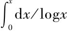
±πi定义，此处双重符号的选取依据积分是由具有正的还是具有负的辐角的复数来计算．由此我们容易推出夏伯纳给出的结果（见Schlömilch的Zeitschrift，Vol.V）它对x的所有值成立，并且对负实值产生间断性［见高斯-贝塞尔（Bessel）通信］．
如果我们按照黎曼的提示进行计算，那么可以发现公式中的logξ（0）应是log（1/2）．可能这只是微小的笔误或印刷错误，将logζ（0）误作logξ（0），因为ζ（0）=1/2．
（朱尧辰 译）
[1]英译本译者为Michael Ansalcli，John Anders对英译提供了技术上的帮助。
[2]现在称为密度．